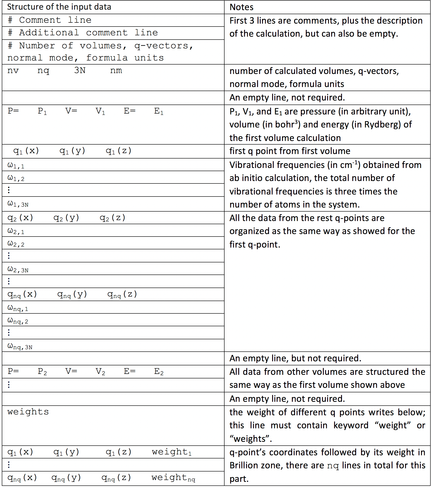

qha-run¶First you need to prepare a standard input file and a YAML file specifying
your computational settings, which by default is named settings.yaml.
Please refer to this webpage
if you are not familiar with YAML syntax.
Here are some keys that can be specified in settings.yaml:
NT: Number of temperatures on the grid
DT: The interval between two nearest temperatures on the grid
NTV: Number of volumes (or equivalently, pressure) on the gird
DELTA_P: The interval between two pressures on the grid, default value is \(0.1\) GPa
DELTA_P_SAMPLE: Pressure-sampling interval, used for output, default value is \(1\) GPa
P_MIN: Desired minimum pressure to calculate, in GPa
input: Name of the input file(s). The value here determines the calculation type is single- or multi- configuration calculation
degeneracy are given in a YAML dictionary.
The code will recognize the organization of the input and choose the calculation module accordingly.
same_phonon_dos: Determine whether use the same phonon dos for all configurations, True or False (default)
static_only: Whether to include only static energy in the calculation, True or False (default)
order: Order of Birch–Murnaghan Equation of State fitting, 3 (default), 4 or 5
energy_unit: Energy unit in the output file can be ry (default) or ev
calculate: Determines which properties will be calculated.
F, Helmholtz free energyG, Gibbs free energyU, internal energyH, enthalpyV, volumeCp, pressure specific heat capacityCv, volumetric specific heat capacityBt, isothermal bulk modulusBtp, derivative of the isothermal bulk modulus with respect to pressureBs, adiabatic bulk modulusalpha, thermal expansion coefficientgamma, thermal Grüneisen parameterstarget: Default value is parallel.
This is a Numba package option. Allowed options are cpu (used on single-threaded CPU), parallel (used on multi-core CPU),
and cuda (used on CUDA GPU).
results_folder: The path to store all calculated values, the default value is ./results
plot_results: Plot all physic properties in PDF format, True or False (default)
T4FV: Temperature for F versus V plotting. ['0', '300'] is default
high_verbosity: Two verbosity levels are implemented, True or False (default)
The input format is as below:
After you have prepared settings.yaml and input in the same directory,
just open your terminal, redirect to that directory and run:
$ qha-run settings.yaml
then the results will be generated in the directory specified
in results_folder option.
The output files’ names and their meanings are as below:
f_tp_ry.txt or f_tp_ev.txtg_tp_ry.txt or g_tp_ev.txth_tp_ry.txt or h_tp_ev.txtv_tp_bohr3.txt or v_tp_ang3.txtcp_tp_jmolk.txtcv_tp_jmolk.txtbt_tp_gpa.txtbtp_tp.txtbs_tp_gpa.txtalpha_tp.txtgamma_tp.txt{kind=link}